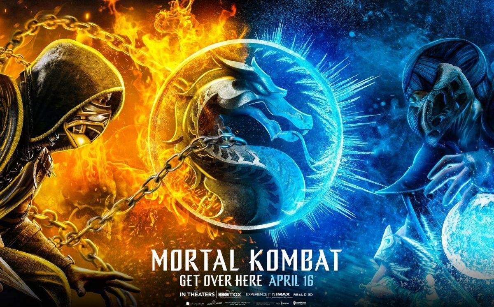
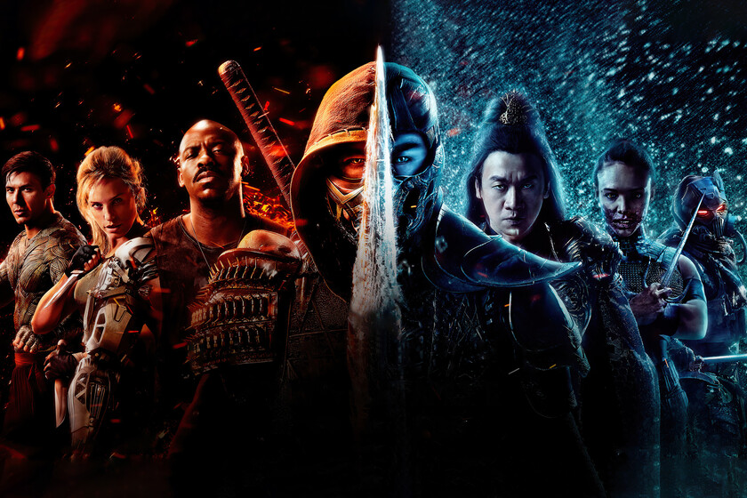

Mortal kombat
Historia
Mortal Kombat es un videojuego de lucha desarrollado y publicado por Midway en 1992 como el primer título de la saga Mortal Kombat y distribuido más tarde por Acclaim Entertainment para la mayoría de las plataformas caseras de la época. El juego introdujo varias características clave de la serie, como los controles únicos de cinco botones y los movimientos sangrientos finales. La historia se centra en la travesía de Liu Kang para salvar al mundo del malvado hechicero Shang Tsung, travesía que acaba con su enfrentamiento en el torneo llamado Mortal Kombat. Mortal Kombat se convirtió en un éxito de ventas y sigue siendo uno de los videojuegos más populares de la historia del género de lucha.
Sobre nosotros
Midway Manufacturing Company (Midway Compañía de Fabricación) comenzó en el año 1958 como una fábrica independiente de equipamiento para entretenimiento. Fue comprada por Bally en 1969. Tras algunos años creando mecánicamente juegos arcade semejantes a tirar bolos y simuladores del oeste de disparos, Midway llegó a ser en 1973 una de las primeras compañías americanas creadoras de videojuegos arcade. Durante los años 1970, Midway estuvo muy ligada a la desarrolladora japonesa de videojuegos Taito Corporation, ambas compañías muy ligadas, con autorizaciones para la fácil distribución de juegos en sus respectivos países. Midway entró en el mercado consumista en 1977 gracias a Bally Home Library Computer; el único sistema que jamás fue desarrollado por Midway. Los sucesos cruciales llegaron a Midway durante 1978, con la distribución del juego de arcade Space Invaders en América. Este fue seguido por la versión estadounidense de Namco, Pac Man (1980). Ms Pac Man (1981) le siguió, convirtiéndose en uno de los juegos arcade más aclamados. Namco terminó su contrato con Midway dada la insistencia de esta de crear infinidad de versiones de Pac-Man. En 1981, Bally, se unió con Midway para formar la división Bally/Midway Manufacturing (Fábrica Bally/Midway). Tres juegos fueron lanzados ese año: Solar Foz, Lanzarian y Satan's Hollow siendo el primero en caracterizar a la marca Bally/Midway. Cerca del final de los setenta, y durante los finales de los ochenta, Midway fue el principal productor de videojuegos arcade en los EE. UU.
Galeria
Mira nuestra galeria de imagenes!
Noticias
Mira lo que se viene!!